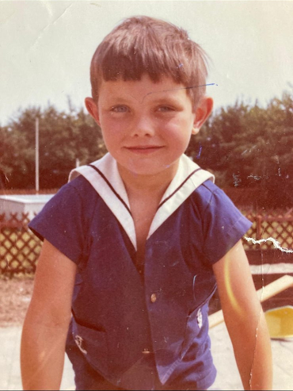

Lang geleden, heel lang geleden kwam Johan ter wereld in het pittoreske Heusden.
Lang geleden, heel lang geleden kwam Johan ter wereld in het pittoreske Heusden.
Johan werd uiteindelijk de middelste (en dat zijn de beste!) van vijf kinderen..
Hier is een korte samenvatting van dat jaar in Nederland:
1. : 💰 Welvaart, baby! – De wederopbouw was klaar, de spaarpot vol: Nederland begon eindelijk weer op een rijk land te lijken.
2. 🏛️ Politiek soapmoment: Het kabinet-Marijnen viel — plons! – en het kabinet-Cals mocht het daarna proberen beter te doen.
3. 📚 Onderwijs in de spotlights: Iedereen had een mening over scholen en vernieuwing – zelfs mensen die al twintig jaar van school waren.
4. ⚽ Ajax rising: Een zekere Rinus Michels begon zijn meesterplan te smeden. De rest van Europa wist nog niet wat hen te wachten stond.
5. 🚴 Jan Janssen trapt zich de geschiedenis in – en het volk fietst trots met hem mee (nou ja, in gedachten dan).
6. ⛸️ Ard Schenk glijdt richting roem – de schaatsheld die Nederland alvast opwarmde voor decennia aan ijsgekte.
7. 📺 Televisie in topvorm: “Stiefbeen en Zoon†en “Pipo de Clown†hielden gezinnen gezellig bij elkaar – tenminste tot bedtijd
8. 🸠Popmuziek ontploft: The Golden Earrings, The Outsiders en een heleboel jongens met vetkuiven en gitaren maakten herrie die “kunst†werd genoemd.
9. ✊ Provo’s en nozems everywhere: Jongeren met ideeën, rookbommen en een afkeer van gezag – een frisse wind vol rook en idealen.
10. 🇳🇱 Kortom: 1965 was het jaar dat Nederland van grijs naar groovy ging – een mix van politiek gedoe, sporthelden en opstandige jeugd met lef. .
Na verhuisd te zijn naar Wijk en Aalburg meldde Johan zich op basisschool De Hoeksteen, waar Johan zich al snel populair maakte. Vooral zijn band met Meester Verzeijl was dan ook echt onovertroffen.
De Versteegjes trokken in een nieuw opgetrokken huis aan de Oude Kerkstraat 18.
Johan had een bijzonder talent voor boeken 😄

Maar de haren groeiden al snel wat langer
In Wijk en Aalburg ging je voetballen en het was dan ook onvermijdelijk dat Johan zich ging melden
op sportpark De Ebbe, de thuisbasis van Wilhelmina ‘26. De voetbalclub was een belangrijk deel van het sociale leven
en daar kwamen we elkaar dan ook regelmatig tegen.
In deze periode begon de liefde voor motoren te ontluiken, onder bezielende leiding van ‘Ome Piet’. Met de Ducati in het achterhuis, jaarlijkse bezoeken aan de TT van Assen, en Boet van Dulmen die regelmatig zijn motoren op de Eilandse dijk testte, was dat ook onvermijdelijk.Uitgaan deden we in Drive In Avanti en De Schuur in Genderen.
Ome Piet met zijn Ducati, waar hij hartstikke trots op was, en waar we allemaal opgezeten hebben.
Naar de TT om de lokale held Den Boet aan te moedigen.
En dan ook met het knietje aan de grond op de brommer...
De jaren negentig stond in het teken van feestjes, muziek en vooral het op eigen benen staan. We waren vaak te vinden in uitgaansgebieden en steden in Brabant, en op festivals als Pinkpop en Torhout Werchter. Muziek was sowieso erg belangrijk: de festivals natuurlijk, de opkomst van de Grunge en natuurlijk ook Pink Floyd in De Kuip.
Mooie tijden op Torhout Werchter
Pink Floyd in de Kuip! ❤️
Feestjes vieren konden we ook!

Die kopjes ook he!
🕺

Dat tijden veranderen werd wel duidelijk in de jaren nul. De zogenaamde volwassenheid sloeg genadeloos toe en het was voor ieder van ons een tijd om onze eigen plek in de wereld te zoeken.
Op de bruiloft van Wout en Anne-Marie
Sketches op de bruiloft van Gerco en Marlinde
Johan heeft een zwakke plek voor Griekenland, soort van een tweede thuisland voor hem. Het land, de mensen en de cultuur klikken meteen.
Ouwehoeren, niks veranderd!

In deze jaren ontmoet Johan Monique, de liefde van zijn leven 💘
In 2019 stappen ze samen het diepe in, ook wel bekend als het huwelijksbootje.
Met Monique is het dan onvermijdelijk dat de Keltische culturen verder in de spotlight komen te staan.
We verhuisden allemaal een aantal maal voordat we ons plekje gevonden hadden. Zo ook Johan en Monique. Van Breda, een stacaravan, vervolgens naar Teteringen en toch weer terug uiteindelijk op het nest in Breda terecht gekomen.
In de caravan met een andere liefde van zijn leven!
Buurtjfeestje, met de kids!!! 🥳
Weer in Breda!

En gesetteld
Niet alleen wijzelf werden ouder, ook bij onze ouders en ooms en tantes ging de tjid meedogenloos door en het proces waarin wij de oudste generatie worden werd helaas dan ook in gang gezet. Het was dan ook een tijd van afscheid nemen, maar ook weer vooruit kijken. De situatie thuis verandert, we krijgen meer tijd voor andere dingen en hobbies worden weer belangrijker.
Sommigen gaan hardlopen, Johan gaat eindelijk zijn belofte van het motorrijbewijs inlossen en eindigt op een mooie Kawasaki Versys.
Feestjes bouwen kunnen we nog steeds. Zoals op de SS Rotterdam, met de topband De Kik!
En daarna heel vaak Naar Links...
En weer Naar Rechts...


We begonnen in de sixties, en we eindigen bij zestig. Dat wil zeggen: daar begint het pas! Johan heeft zijn motorrijbewijs gehaald en dat gaan we vieren!
Wij nodigen je bij deze uit voor een volledig verzorgd motorweekend in de Ardennen. Vanuit Breda rustig aan naar de Ardennen, en daar de heuvels in, via de Route des Sources. Het voorjaar van 2026 is de meest voor de hand liggende periode, precieze datum prikken we samen.
Johan op zijn Kawa
De Route des Sources is een mooie route langs kastelen, stadjes en haarspeldbochten.
Ongeveer 130 km, dus we kunnen hem heen en terug nemen 😄

En daarna een biertje met vrienden onder elkaar.